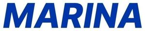

Trade Mark Journal No.2025/045 7 November 2025
WO0000001868076 (10,21)
Office of origin: Russian Federation
Date of International Registration:30 May 2025
Date of designation in the UK:
30 May 2025

The mark contains the colours blue.
- Class 10
- Apparatus for testing breast milk for medical purposes; analysers for bacterial identification for medical purposes; cholesterol meters; diagnostic apparatus for medical purposes used in medical laboratories; blood testing apparatus; testing apparatus for medical purposes; anaesthetic apparatus; galvanic therapeutic appliances; apparatus for artificial respiration; apparatus for the treatment of deafness; physical exercise apparatus for medical purposes; body rehabilitation apparatus for medical purposes; dental apparatus and instruments; surgical apparatus and instruments; resuscitation apparatus; dental apparatus, electric; physiotherapy apparatus; bed vibrators; hot air therapeutic apparatus; diagnostic apparatus for medical purposes; traction apparatus for medical purposes; radiotherapy apparatus; microdermabrasion apparatus for medical or therapeutic purposes; apparatus for the regeneration of stem cells for medical purposes; apparatus for DNA and RNA testing for medical purposes; breathing apparatus for medical purposes; apparatus and installations for the production of X-rays, for medical purposes; magnetic resonance imaging [MRI] apparatus for medical purposes; orthodontic appliances; medical cooling apparatus for treating heatstroke; medical cooling apparatus for use in therapeutic hypothermia; radiological apparatus for medical purposes; X-ray apparatus for medical purposes; hearing aids; ultrasonic imaging apparatus for medical purposes; nasal aspirators; audiometers; trusses; maternity belts; support bandages; cupping glasses; ear plugs [hearing protection devices]; ear plugs for swimmers; elastic bandages, not for dressings; dental burs; acupressure bands; bracelets for medical purposes; anti-nausea wristbands; anti-rheumatism bracelets; air cushions for medical purposes; vaporizers for medical purposes; hot air vibrators for medical purposes; vibromassage apparatus; gastroscopes; haemocytometers; glucometers; lice combs; surgical sponges; pill cutters; densitometers for medical purposes; defibrillators; dialyzers; bath boards adapted for persons with physical disabilities; containers especially made for medical waste; clips, surgical; mirrors for dentists; mirrors for surgeons; probes for medical purposes; urethral probes; artificial teeth; acupuncture needles; suture needles; needles for medical purposes; orthopaedic articles; pill crushers; biodegradable bone fixation implants; contraceptive implants; surgical implants comprised of artificial materials; inhalers; hydrogen inhalers; injectors for medical purposes; incubators for medical purposes; incubators for babies; obstetric apparatus; obstetric apparatus for cattle; electric acupuncture instruments; surgical cutlery; insufflators; chambers for inhalers; endoscopy cameras for medical purposes; cannulae; droppers for medical purposes; dropper bottles for medical purposes; heart rate monitoring apparatus; heart pacemakers; catheters; keratometers; catgut; draw-sheets for sick beds; clips for dummies; artificial skin for surgical purposes; hospital beds; menstrual cups; biomagnetic rings for therapeutic or medical purposes; teething rings; anti-rheumatism rings; compressors [surgical]; thermo-electric compresses [surgery]; oxygen concentrators for medical purposes; abdominal corsets; corsets for medical purposes; crutches; haptic suits for medical purposes; dentists' armchairs; massage chairs with built-in massage apparatus; armchairs for medical or dental purposes; commode chairs; crystals for therapeutic purposes; waterbeds for medical purposes; air beds for medical purposes; beds specially made for medical purposes; feeding bottle valves; love dolls [sex dolls]; lasers for medical purposes; lamps for medical purposes; curing lamps for medical purposes; quartz lamps for medical purposes; ultraviolet ray lamps for medical purposes; lancets; kinesiology tapes; athletic tapes; lenses [intraocular prostheses] for surgical implantation; spoons for administering medicine; spoons for patients with tremor; therapeutic magnets; sanitary masks; reusable sanitary masks made of gauze; masks for use by medical personnel; respiratory masks for artificial respiration; protective masks for medical purposes; anaesthetic masks; respiratory masks for medical purposes; disposable steam-heated masks for therapeutic purposes; LED masks for therapeutic purposes; therapeutic facial masks; gum massagers for babies; suture materials; childbirth mattresses; air mattresses for medical purposes; furniture especially made for medical purposes; water bags for medical purposes; breast pumps; body fat monitors; body composition monitors; urinals being vessels; portable hand-held urinals; teeth protectors for dental purposes; nipple shields for breastfeeding; temperature indicator labels for medical purposes; knee bandages, orthopaedic; tips for crutches; nanorobots for medical purposes; fingerstalls for medical purposes; bone void fillers comprised of artificial materials; medical guidewires; pumps for medical purposes; nebulisers for medical purposes; thread, surgical; knives for surgical purposes; scissors for surgery; ambulance stretchers; stretchers, wheeled; boots for medical purposes; orthopaedic footwear; clothing especially for operating rooms; compression garments; blankets, electric, for medical purposes; supports for flat feet; ophthalmoscopes; cooling pads for first aid purposes; portable earpicks with endoscopy function; disposable steam-heated patches for therapeutic purposes; slings [support bandages]; gloves for massage; gloves for medical purposes; pessaries; saws for surgical purposes; ear picks; electric massage guns; cooling patches for medical purposes; spittoons for medical purposes; plaster bandages for orthopaedic purposes; orthopaedic bandages for joints; abdominal pads; cushions for medical purposes; pads for preventing pressure sores on patient bodies; air pillows for medical purposes; soporific pillows for insomnia; heating cushions, electric, for medical purposes; patient hoists; abdominal belts; galvanic belts for medical purposes; hypogastric belts; belts for medical purposes; orthopaedic belts; umbilical belts; belts, electric, for medical purposes; condoms; sphygmotensiometers; pulse meters; esthetic massage apparatus; massage apparatus; diabetic monitoring apparatus; veterinary apparatus and instruments; medical apparatus and instruments; urological apparatus and instruments; brushes for cleaning body cavities; appliances for washing body cavities; corn knives; incontinence sheets; sterile sheets, surgical; surgical drapes; hair prostheses; artificial eyes; artificial breasts; dentures; artificial limbs; artificial jaws; ice bags for medical purposes; toe separators for orthopaedic purposes; surgical bougies; orthodontic rubber bands; X-ray photographs for medical purposes; respirators for artificial respiration; respirators for filtering air for medical purposes; surgical robots; ear trumpets; strait jackets; sex toys; scalpels; tongue scrapers; feeding bottle teats; baby feeding dummies; dummies for babies; receptacles for applying medicines; spirometers [medical apparatus]; douche bags; implantable subcutaneous drug delivery devices; hearing protectors; contraceptives, non-chemical; orthopaedic soles; stents; drug-coated stents for thrombosis; stethoscopes; medical examination tables; operating tables; basins for medical purposes; bed pans; instrument cases for use by doctors; arch supports for footwear; suspensory bandages; thermal packs for first aid purposes; thermometers for medical purposes; tomographs for medical purposes; trocars; walking sticks for medical purposes; quad canes for medical purposes; drainage tubes for medical purposes; capillary tubes for medical use; X-ray tubes for medical purposes; radium tubes for medical purposes; intrauterine devices; balling guns; protection devices against X-rays, for medical purposes; apparatus for acne treatment; dosage dispensers for medical use; enema apparatus for medical purposes; filters for respiratory masks for medical purposes; filters for ultraviolet rays, for medical purposes; patient examination gowns; wheeled walkers to aid mobility; walking frames for persons with disabilities; cases fitted for medical instruments; elastic stockings for surgical purposes; stockings for varices; splints, surgical; laser therapy helmets for treating alopecia; neural helmets for medical purposes; tongue depressors for medical purposes; vaginal syringes; syringes for injections; syringes for medical purposes; hypodermic syringes; uterine syringes; urethral syringes; pins for artificial teeth; castrating pincers; forceps; robotic exoskeleton suits for medical purposes; radiology screens for medical purposes; electrodes for medical use; electrocardiographs; brain pacemakers.
- Class 21
- Autoclaves, non-electric, for cooking; indoor aquaria; cosmetic apparatus for microdermabrasion; wine aerators; buckets; automatic opening and closing trash cans for household purposes; cookie jars; candle jars [holders]; china ornaments; dishes; vegetable dishes; saucers; boxes for sweets; bottles; demijohns; busts of porcelain, ceramic, earthenware, terra-cotta or glass; vases; epergnes; fruit bowls; inflatable bath tubs for babies; bird baths; baby baths, portable; plungers for clearing blocked drains; waffle irons, non-electric; diaper disposal pails; ice buckets; mop wringer buckets; buckets made of woven fabrics; whisks, non-electric, for household purposes; cooking skewers of metal; towel rails and rings; clothing stretchers; barbecue forks; serving forks; hair for brushes; horsehair for brush-making; funnels; pie funnels; candle warmers, electric and non-electric; carpet beaters [hand instruments]; signboards of porcelain or glass; candle extinguishers; heads for electric toothbrushes; potties for children; flower pots; chamber pots; disposable portable potties for adults and children; cruets; decanters; large-toothed combs for the hair; combs for animals; tea cosies; abrasive sponges for scrubbing the skin; bath sponges; make-up sponges; sponges for household purposes; scouring pads; sponge holders; toothpick holders; soap holders; table napkin holders; holders for flowers and plants [flower arranging]; tea bag rests; shaving brush stands; toilet paper holders; plug-in diffusers for mosquito repellents; aromatic oil diffusers, other than reed diffusers, electric and non-electric; ironing boards; cutting boards for the kitchen; bread boards; washing boards; crushers for kitchen use, non-electric; strainers for household purposes; smoke absorbers for household purposes; containers for household or kitchen use; kitchen containers; glass jars [carboys]; heat-insulated containers; heat-insulated containers for beverages; thermally insulated containers for food; glass flasks [containers]; closures for pot lids; chamois leather for cleaning; toothpicks; ceramics for household purposes; majolica; works of art of porcelain, ceramic, earthenware, terra-cotta or glass; kitchen grinders, non-electric; cleaning instruments, hand-operated; cabarets [trays]; couscous cooking pots, non-electric; cooking pots, non-electric; flower-pot covers, not of paper; tar-brushes, long handled; shaving brushes; make-up brushes; glue pots, non-electric; cages for household pets; birdcages; cages for collecting insects; baking mats; ladles for serving wine; polishing leather; shampoo shields; glass bulbs [receptacles]; shoe trees; napkin rings; poultry rings; rings for birds; disposable aluminium foil containers for household purposes; coin banks; piggy banks; bread baskets for household purposes; baskets for household purposes; waste paper baskets; feeding troughs; pet feeding bowls, automatic; mangers for animals; lunch boxes; insect collectors' boxes; tea caddies; washtubs; earthenware saucepans; mess-tins; cauldrons; coffee percolators, non-electric; coffeepots, non-electric; coffee grinders, hand-operated; mugs; beer mugs; tankards; rat traps; pot lids; aquarium hoods; butter-dish covers; dish covers; cheese-dish covers; reusable silicone food covers; buttonhooks; reusable ice cubes; commemorative statuary cups of porcelain, ceramic, earthenware, terra-cotta or glass; prize cups of porcelain, ceramic, earthenware, terra-cotta or glass; jugs; perfume burners, electric and non-electric; watering cans; adhesive refill sheets for rollers for cleaning; fly traps; insect traps; ice cream scoops; mixing spoons [kitchen utensils]; basting spoons [cooking utensils]; serving spoons; pie servers; spatulas for kitchen use; valet trays [receptacles for small objects] for household purposes; litter boxes for pets; mug cosies; butter dishes; material for brush-making; polishing materials for making shiny, except preparations, paper and stone; tablemats, not of paper or textile; noodle machines, hand-operated; lint removers, electric or non-electric; pasta makers, hand-operated; polishing apparatus and machines, for household purposes, non-electric; pepper mills, hand-operated; mills for household purposes, hand-operated; feather-dusters; brooms; cocktail stirrers; isothermic bags; decorating bags for confectioners; cooking mesh bags; bowls [basins]; pet feeding bowls; soup bowls; mosaics of glass, not for building; dishcloths; saucepan scourers of metal; stainless steel soap; soap boxes; mouse traps; meat grinders, non-electric; spice sets; nozzles for watering cans; pouring spouts; wine pourers; cake decorating tips and tubes; nozzles for watering hose; fitted picnic baskets, including dishes; toilet cases; eyebrow thread; floss for dental purposes; fibreglass thread, other than for textile use; cookie [biscuit] cutters; zesters; pastry cutters; sprinklers; syringes for watering flowers and plants; pill organizers for personal use; electronic pill organizers for personal use; egg yolk separators; cotton waste for cleaning; wool waste for cleaning; cleaning tow; personal hydration packs comprising a fluid reservoir and a delivery tube; bags for use in cooking; cold packs for chilling food and beverages; chopsticks; sticks for frozen confections; food steamers, non-electric; pepper pots; abrasive mitts for scrubbing the skin; animal grooming gloves; gloves for household purposes; oven mitts; car washing mitts; polishing gloves; gardening gloves; pestles for kitchen use; droppers for household purposes; wine-tasting pipettes; droppers for cosmetic purposes; bulb basters; plates for diffusing aromatic oil; plates to prevent milk boiling over; dripping pans; trays for household purposes; trays of paper, for household purposes; lazy susans; candle holders; trivets [table utensils]; grill supports; menu card holders; knife rests for the table; stands for portable baby baths; mats, not of paper or textile, for beer glasses; stands for clothes irons; egg cups; abrasive pads for kitchen purposes; drinking troughs; serving ladles; powdered glass for decoration; pottery; pots; vessels for making ices and ice cream, non-electric; painted glassware; tableware, other than knives, forks and spoons; porcelain ware; earthenware; cosmetic utensils; trouser presses; tortilla presses, non-electric [kitchen utensils]; tube squeezers for household purposes; fruit presses, non-electric, for household purposes; deodorizing apparatus for personal use; cruet sets for oil and vinegar; make-up removing appliances; apparatus for wax-polishing, non-electric; bottle openers, electric and non-electric; glove stretchers; boot jacks; crumb trays; tie presses; potholders; clothes-pegs; glass stoppers; roaster pans; powder compacts, empty; perfume vaporizers; powder puffs; dusting apparatus, non-electric; foam toe separators for use in pedicures; eyelash separators; combs; electric combs; grills [cooking utensils]; sifters [household utensils]; drinking horns; shoe horns; candle drip rings; adhesive rollers for cleaning; broom handles; salad bowls; place mats, not of paper or textile; beverage urns, non-electric; sugar bowls; beaters, non-electric; egg separators, non-electric, for household purposes; coffee services [tableware]; liqueur sets; tea services [tableware]; sieves [household utensils]; cinder sifters [household utensils]; tea strainers; siphon bottles for carbonated water; rolling pins, domestic; frying pans, non-electric; squeegees [cleaning instruments]; steel wool for cleaning; currycombs; smart medicine bottles, empty; blenders, non-electric, for household purposes; scoops for household purposes; dustpans; straws for drinking; salt cellars; drinking vessels; refrigerating bottles; stew-pans; cups of paper or plastic; glasses [receptacles]; drinking glasses; statues of porcelain, ceramic, earthenware, terra-cotta or glass; figurines of porcelain, ceramic, earthenware, terra-cotta or glass; glass for vehicle windows [semi-finished product]; alabaster glass, not for building; fused silica [semi-worked product], other than for building; plate glass [raw material]; opal glass; glass, unworked or semi-worked, except building glass; opaline glass; glass incorporating fine electrical conductors; enamelled glass, not for building; glass wool, other than for insulation; vitreous silica fibres, other than for textile use; fibreglass, other than for insulation or textile use; dish drying racks; mortars for kitchen use; portable cool boxes, non-electric; soup tureens; drying racks for laundry; rotary washing lines; tajines, non-electric; basins [receptacles]; table plates; paper plates; disposable table plates; graters for kitchen use; insulating flasks; indoor terrariums [plant cultivation]; indoor terrariums [vivariums]; roller tubes for peeling garlic; cloth for washing floors; polishing cloths; cloths for cleaning; dusting cloths [rags]; furniture dusters; wax-polishing appliances, non-electric, for shoes; electric devices for attracting and killing insects; watering devices; ultrasonic pest repellers; utensils for household purposes; kitchen utensils; cooking utensils, non-electric; figurines of porcelain, ceramic, earthenware, terra-cotta or glass for cakes; coffee filters, non-electric; flasks; soap dispensing bottles; water flossers; hip flasks; drinking bottles for sports; boot trees; moulds [kitchen utensils]; egg poachers; cake moulds; baking cases of paper; baking cases of silicone; ice cube moulds; cookery moulds; deep fryers, non-electric; comb cases; bread bins; fly swatters; hot pots, non-electric; crystal [glassware]; teapots; kettles, non-electric; cups; garlic presses [kitchen utensils]; ironing board covers, shaped; covers for tissue boxes; laundry balls, empty; dryer balls; decorative glass spheres; mops; mop wringers; cocktail shakers; cosmetic spatulas; cosmetic stamps, empty; corkscrews, electric and non-electric; animal bristles [brushware]; pig bristles for brush-making; brushes; sound wave vibration hairbrushes; dishwashing brushes; ski wax brushes; facial cleansing brushes, electric and non-electric; brushes for cleaning tanks and containers; lamp-glass brushes; horse brushes; scrubbing brushes; toothbrushes; toothbrushes, electric; basting brushes; carpet sweepers; shoe brushes; toilet brushes; electric brushes, except parts of machines; eyebrow brushes; nail brushes; eyelash brushes; barbecue tongs; nutcrackers; ice tongs; salad tongs; sugar tongs; decanter tags; nest eggs, artificial; window-boxes; dustbins for household purposes; boxes of glass.
Limited Liability Company "MOLECULA MEDICAL GROUP"
Representative: Kobzhitskii Dmitrii Andreevich, a/ia 6, ul. Pribrezhnaia, d. 4, liter A, RU-192076 Sankt-Peterburg, RUSSIAN FEDERATION